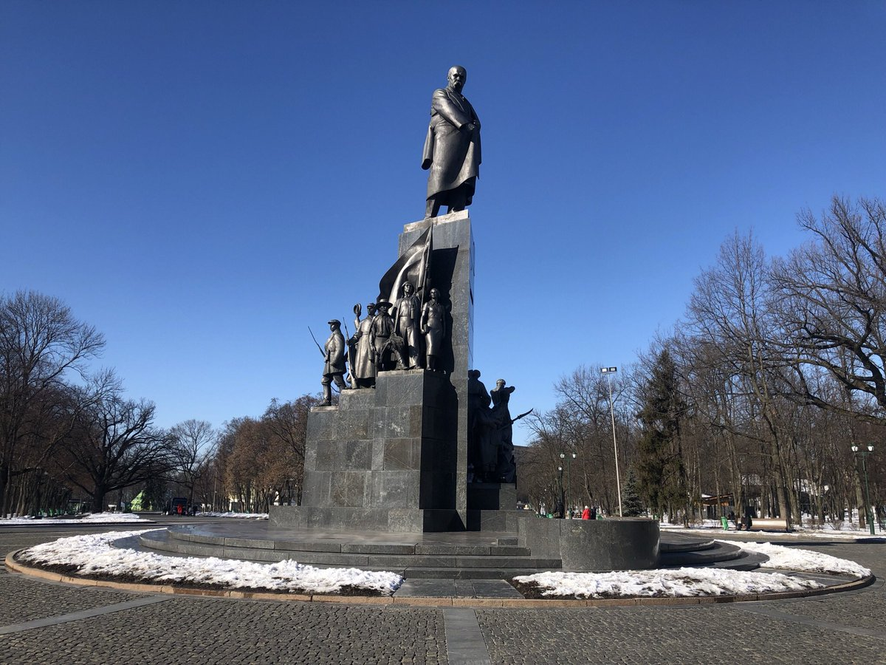
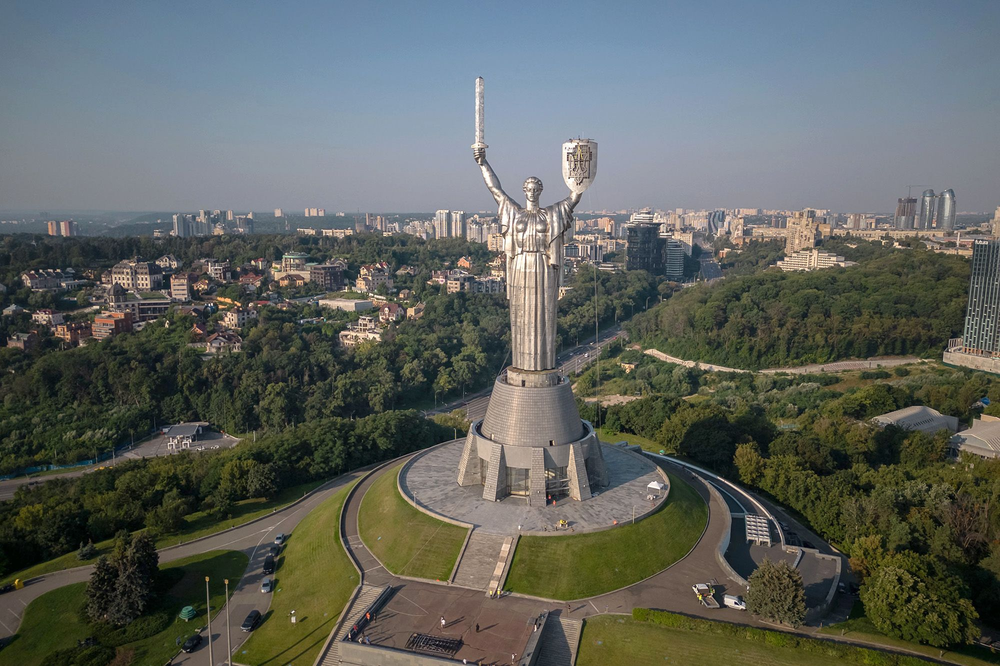
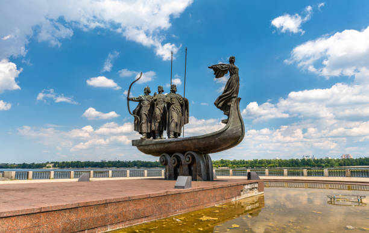

Ukrainian Monuments

Monument to Taras Shevchenko in Kharkiv
The Monument to Taras Shevchenko in Kharkiv is one of the most impressive and iconic statues of Ukraine’s national poet. It was unveiled in 1935 and designed by sculptor Matvei Manizer. The monument consists of a central statue of Shevchenko surrounded by expressive sculptural figures representing characters from his poems and symbolic scenes from Ukrainian history and folklore. It stands in Shevchenko Garden near the university and is considered one of the finest examples of monumental Soviet-era sculpture dedicated to a Ukrainian cultural figure.

Motherland Monument (Rodyna-Maty) in Kyiv
The Motherland Monument in Kyiv is a massive stainless steel statue symbolizing the strength and resilience of the Soviet victory in World War II. It stands 62 meters tall, and with its pedestal reaches a total height of 102 meters. Completed in 1981, the monument depicts a woman holding a shield and a sword. It is part of the National Museum of the History of Ukraine in the Second World War and remains one of the most recognizable landmarks in Kyiv, dominating the city skyline.

Independence Monument in Kyiv
The Motherland Monument in Kyiv is a massive stainless steel statue symbolizing the strength and resilience of the Soviet victory in World War II. It stands 62 meters tall, and with its pedestal reaches a total height of 102 meters. Completed in 1981, the monument depicts a woman holding a shield and a sword. It is part of the National Museum of the History of Ukraine in the Second World War and remains one of the most recognizable landmarks in Kyiv, dominating the city skyline.
Monument to King Danylo of Halych in Lviv
The Motherland Monument in Kyiv is a massive stainless steel statue symbolizing the strength and resilience of the Soviet victory in World War II. It stands 62 meters tall, and with its pedestal reaches a total height of 102 meters. Completed in 1981, the monument depicts a woman holding a shield and a sword. It is part of the National Museum of the History of Ukraine in the Second World War and remains one of the most recognizable landmarks in Kyiv, dominating the city skyline.

Monument to Kyi, Shchek, Khoryv, and Lybid in Kyiv
This monument is dedicated to the legendary founders of Kyiv — three brothers (Kyi, Shchek, Khoryv) and their sister Lybid. It is located on the banks of the Dnipro River and was completed in 1982. The sculpture shows the siblings standing on a boat, symbolizing the origins of the ancient settlement that became the capital of Kyivan Rus’. The monument has become a beloved symbol of Kyiv’s mythology and rich historical heritage.